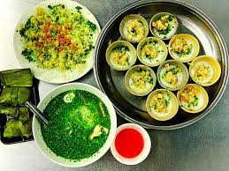
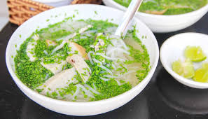
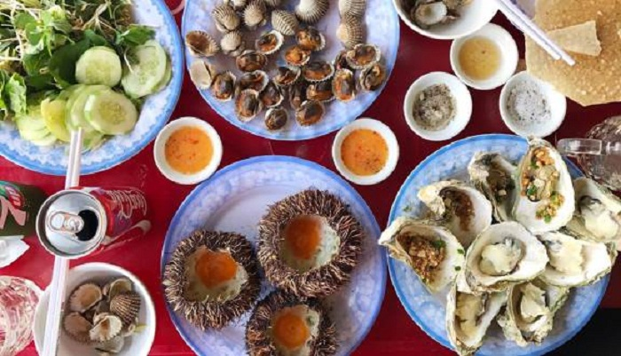
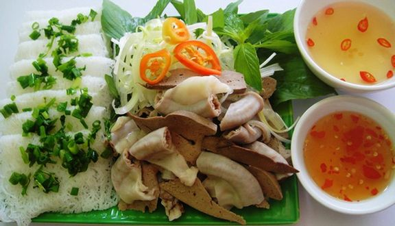
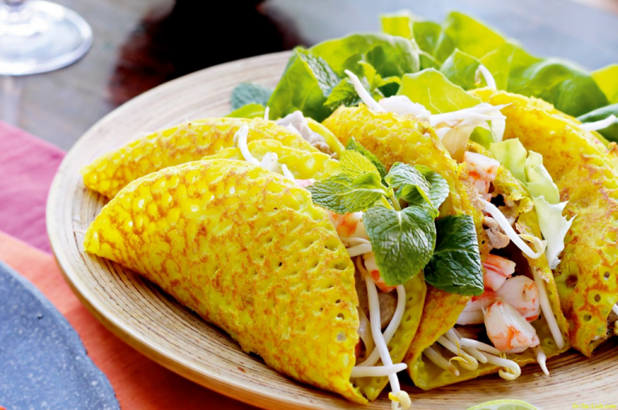
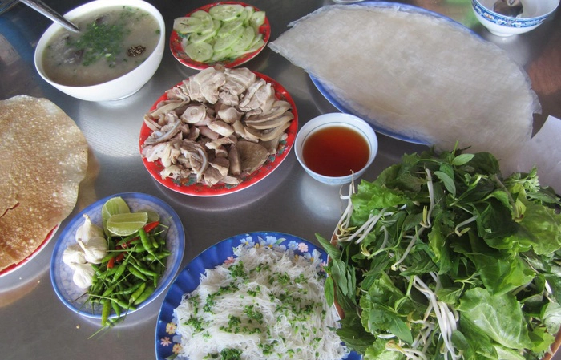

Bánh bèo

Mô tả
Nhắc đến những món ngon bình dân ở Phú Yên thì chắc chắn ta phải nhớ đến món bánh bèo chén Phú Yên. Bánh mềm mềm, chấm cùng nước mắm ớt cay cay đầu lưỡi, kèm chút mỡ hành, bánh mì vụn chiến giòn, chà bông. Đơn giản dung dị là thế nhưng một khi đã ăn là không thể ngừng.
Giới thiệu về món bánh bèo
Bánh bèo chén là một món ngon bình dân Phú Yên mà bất kỳ du khách nào đến đây cũng nên thử qua. Bánh bèo đi vào thơ ca Việt Nam một cách dân dã, bình dị như cái cách ta thưởng thức nó, chế biến nó. Dù dân dã bình dị như thế nhưng bánh bèo lại có một sức hút khó cưỡng đấy! Bạn thấy cách con quạ phải học nói tiếng Việt để hỏi má bánh bèo chín chưa chưa? Từ ăn khế mà nay nó đã chuyển sang ăn bánh bèo luôn rồi đấy!Bánh canh hẹ

Bánh canh hẹ Phú Yên - Món ăn linh hồn cho các tín đồ mê hẹ
Phú Yên là vùng đất nổi tiếng với nhiều món ngon đặc trưng như cháo hàu đầm Ô Loan, ghẹ Cù Mông, bánh xèo, bún sứa… Trong đó không thể không kể đến bánh canh hẹ Phú Yên – Một món ăn vừa ngon vừa rẻ, cực kỳ hợp lý. Các tín đồ mê hẹ ơi, cùng đi tìm hiểu cùng MIA.vn nhé!
Giới thiệu về bánh canh hẹ Phú Yên
Bánh canh hẹ Tuy Hòa thuộc tỉnh Phú Yên là một món ngon bình dân nổi tiếng. Không chỉ là một món ăn thanh đạm cho bữa sáng mà nó còn giúp bạn đánh thức vị giác một cách nhẹ nhàng, tinh tế bởi nước dùng thanh mát được ninh từ cá. Đây là món ăn cực kỳ phổ biến tại các tỉnh ven biển miền Trung từ Đà Nẵng kéo dài đến Ninh Thuận. Tùy vào từng địa phương mà cách chế biến món ăn này cũng sẽ khác nhau. Nơi thì dùng cá cờ, cá chỉ vàng, cá mối… để làm chả cá, nơi thì chỉ dùng thịt và trứng cút, nơi sợi bánh canh làm từ bột gạo, nơi thì lại dùng bột lọc để tạo thành bánh canh. Nhưng nhìn chung, bánh canh hẹ ở Phú Yên vẫn có một nét đặc biệt rất riêng với màu xanh mướt và vị thơm nồng của hẹ.
  
Cung cấp thông tin với chất lượng an toàn cho quý khách